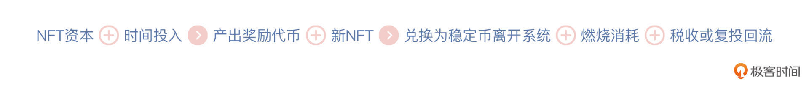

- 00 开篇词 Web 3.0：一场已经开启的互联网革命！.md.html
- 01 我们为什么需要Web 3.0？.md.html
- 02 公链：从计算分层开始.md.html
- 03 继续分层：身份和激励.md.html
- 04 NFT（一）：数据确权及其文化和商业价值的发现.md.html
- 05 NFT（二）：数据确权及其文化和商业价值的发现.md.html
- 06 边玩边赚能给游戏和电商带来新的商业模式吗？.md.html
- 07 Web 3.0社交和创作者经济.md.html
- 08 区块链：从底层重构金融.md.html
- 09 DeFi：“三无模式”开辟金融新蓝海.md.html
- 10 关于DAO的七个真相和两个趋势（一）.md.html
- 11 关于DAO的七个真相和两个趋势（二）.md.html
- 12 DeFi的空中楼阁能盖多高？.md.html
- 13 代码和法律，哪个更强？.md.html
- 14 Web 3.0正在形成的合力.md.html
- 特别放送 Yuga Labs：Web 3.0迪士尼的谛造之路.md.html
- 结束语 Web 3.0时代，你的创造和收获！.md.html
- 捐赠
06 边玩边赚能给游戏和电商带来新的商业模式吗？
你好，我是郭大治，很高兴与你在极客时间再次相遇。
前面两节课，我针对NFT作为数字确权的基本制度，给你讲解了它的四个属性。而接下来，我还会在这个方向上继续延伸，带你看看NFT在其他场景下，比如游戏、电商、音乐、社交等场景下，已经出现了哪些新玩法、这些新玩法又遇到了哪些新问题，以及针对这些新问题又有哪些值得探索的解决方案。
今天这节课，我们就先从游戏和电商开始，我们先来看一款堪称现象级的游戏，这款游戏在2021年3月上线，同年8月游戏收入就高达3.6亿美元，收入量级已经进入全球单款游戏收入的第一梯队，而且它还在游戏领域开创了一种全新的经济模型，就是Play to Earn，也就是边玩边赚。在这种模式下，玩家持续投入自己的时间和精力，就可以持续获得代币奖励，这款游戏就是 Axie Infinity ！
下面，让我先来带你看看，Axie infinity是如何让用户实现边玩边赚的吧。
Axie Infinity：Play to Earn的开创者！
Axie Infinity是一款回合制策略游戏，主要可以提供战斗与繁育两种玩法。
在战斗机制方面，Axie设置了PvE（人机对战）和PvP（玩家之间对战）两种玩法，两类战斗中的获胜者都可以获得代币奖励。
在宠物繁育方面，Axie设定可以通过3个基因控制6个身体部位产生变异，玩家不仅能通过出售宠物获利，而且还有概率生成属性极其稀有的超级宠物，这种“彩票”机制的设计增加了游戏的可玩性，也催生出了一批忠实的职业玩家。
至于盈利方式，Axie Infinity采用了双代币模型，即AXS和SLP，用来实现用户激励。
其中，AXS 属于治理代币，类似于一个公司的股权，游戏的繁育过程需要消耗AXS，但在每个月的玩家排位赛中，排名靠前的玩家可以获得AXS代币奖励；SLP 属于效用代币，类似于一种门票，玩家通过PvP和PvE对战，可以获得SLP代币作为奖励，但玩家需要先拥有三只Axie小精灵，才有资格参加战斗，而且小精灵的繁育需要消耗SLP，每个账号每天能获取的SLP是有上限的，而且新获得的SLP有14天的锁仓期。
另外，Axie“边玩边赚”的模式还催生了一种新的业态，就是链游公会。链游公会区别于传统游戏公会的主要特点就在于，他们是基于游戏中的NFT资产来提供租赁业务的（而传统游戏公会只负责组队和攻略交流）。
比如，进入Axie游戏的门槛是需要拥有三个Axie宠物，链游公会可以出借精灵给玩家打金，并抽取一定的分成。所以，有了链游公会之后，玩家就可以“零成本”参与游戏，仅需付出自己的时间和精力即可获得收入。
STEPN：昙花一现的X to Earn
那么，既然玩游戏可以赚钱，跑步能不能呢？STEPN的答案是，当然可以。
STEPN 发布于2022年2月，是一款主打“跑步赚钱”的游戏。STEPN虽然把用户赚钱的场景搬到了线下健身，但他们的经济模型和Axie非常相似：一方面，用户需要先购买“虚拟跑鞋”，跑步数据通过GPS定位系统和“虚拟跑鞋”实现数据同步之后，才可以开始“跑步赚钱”；另一方面STEPN主要的游戏机制，也都是围绕游戏代币的奖励和消耗设计的。
在游戏代币的奖励方面，持有虚拟跑鞋是获得代币奖励的前提条件，而且跑鞋的种类和数量直接影响跑鞋的产出，用户持有一只“鞋子”每天可以获得2个能量值，并且只能在2个能量值之内跑步。虽然这2个能量值只能当天使用，过期即作废，但每个用户持有鞋子的数量是没有上限的，持有多只鞋子甚至可以使能量值组合超过100。
在游戏代币的消耗方面，STEPN将所有“虚拟跑鞋”分成4大类，每大类又分为30级，同样是跑步消耗一个能量值，但产出却按照级别从低到高逐渐增加，这样就在游戏代币的供给过程中，为游戏代币创造了一个消耗的场景，同样都是“跑步赚币”，谁不希望每天能多赚一点呢？但要想多赚一点，就先要多消耗一点，基本逻辑就是这样。
而在跑鞋升级之外，还有“Mint跑鞋”也是代币消耗的一个场景。所谓“Mint跑鞋”，简单点说就是“旧鞋生小鞋”，虽然你可能听起来会觉得有点不符合生活经验，但它其实符合游戏玩家的心理需求，所以对于用户来说，接受这个规则并不难。
那么，相对于Axie来说，STEPN适合的用户群体其实更广，纯玩的用户占比更高。很多人最开始是为了打金而来的，但是在跑步一段时间之后逐渐养成了每天锻炼的习惯，并因此而成为STEPN的长期用户。
所以在这一系列的操作下，2022年上半年，STEPN上线即成为一个现象级的产品，最高峰的时候日活用户达上万人。但不幸的是，在STEPN用户持续增加的时期，恰逢虚拟资产市场大跳水，比特币价格跌去60%，很多用户高价买的鞋子，跑步获得的奖励代币价格却低得可怜，“跑步赚钱”变成了“付费跑步”，游戏流量在上线不到半年就出现大幅跳水，用户也变成被动接盘。
我想说的是，从以上两个案例可以看出，不论是卡牌对战，还是跑步健身，在不同的游戏场景下，其实都有一条共同的主线贯穿游戏的整个玩法，那就是用户需要先投入一部分资金才能获得后续获得奖励的机会。所以，对于这类游戏的玩家来说，“回本周期”成为一个非常重要的概念。
那么，站在资金流的角度，玩家到底能不能通过玩游戏或者跑步赚到钱？如果能的话，这种赚钱效应是普遍的，还是需要具备一定的条件才可以实现？
接下来，我们就跳出游戏的具体玩法，从经济学的视角针对这些问题进行一次探讨。
为什么Play可以Earn？
在分析Play to Earn的收益来源之前，我们先回顾一下传统的游戏厂商是如何赚钱的。
目前来看，付费游戏主要分为两种，一种是先付费买游戏，一种是免费玩游戏，但付费后可以购买更好的体验和更多的内容，即Free to Play。
不过，“先付费，后体验”的模式已经成为历史了，Free to Play是当前大部分游戏采用的通用模式，然后游戏厂商会在免费游戏的模式下，通过创造各种付费场景实现收入。比如付费解锁关卡/地图、购买皮肤等等，来提升角色能力、减少等待时间，或者是游戏中有植入广告但付费就可以去广告。
所以，我们从免费游戏的盈利模式中可以看出，在这些游戏的收入中，只有广告收入是来自游戏之外，其他的收入都要靠新玩家或者既有玩家转化为付费玩家才能实现。也就是说，厂商需要把主要的精力放在吸引新玩家、提高玩家留存率和活跃度、提升付费转化率等方面。
那么，边玩边赚模式的出现，能为游戏的“免费模式”带来哪些影响呢？我们先从NFT为游戏资产赋能的角度开始探究。
首先，NFT可以通过资产确权为游戏资产赋予价值。基于NFT确权，玩家可以真正拥有这些游戏资产，这种“拥有”不仅体现在控制权方面，还体现在创作权方面。NFT作为一种通用的数据确权制度，游戏玩家不仅可以把自己在游戏内花费的时间和获得的技巧，通过NFT资产的形式展现出来，还第一次获得了游戏资产的“创作权”，并具有与之相关的转让和收益权。这也是我们在前面课程中一直提到的要点。
其次，NFT资产具有游戏内的使用价值。玩家凭借NFT资产可以在游戏内打金、治理投票、铸造新的NFT等，尽管非区块链游戏在绝大多数情况下也存在这类设计，但是智能合约防作弊的特性，其实也进一步增强了玩家的信心，而且那些具有治理投票系统的游戏还允许玩家用手中的代币决定游戏走向和确保执行。
第三，NFT资产具有外在价值。这一点是指，玩家获得的NFT资产和游戏代币可以在链上，而不限于仅在游戏内流通，因而能够产生流动性溢价和社交价值，特别是稀有的NFT资产更是一种财富、技能，甚至是社交关系的展现。此外，链上数据的公开性，也使得项目方可以方便地定位到持有稀有属性资产的帐户，并对其开展精准营销。所以这就像我在第5讲中说的，NFT资产同时也具有营销价值。
通过以上内容，我们可以看出，关于NFT游戏资产的第二和第三条属性，直接增加了游戏资产对于玩家的吸引力，而第一条属性则使得游戏资产供给和需求的结构，发生了根本性变化，游戏商业模式的改变是自然而然发生的。
所以，基于以上特性，“用户付出时间和数据，所以也应该获得回报”的逻辑，就成为了P2E（Play To Earn）成立的理论基础。
Play to Earn的宿命，“赚钱效应”还是“死亡螺旋”？
那么现在，我们站在盈利性的角度可以分析出来，游戏玩家在P2E模型下的基本行为模式，可以概括为以下几点：
- 玩家既是生产者又是消费者，NFT是经济体中的资产；
- 玩家进场需要购买NFT，按照游戏规则活动可以获得代币奖励，也可以随时卖出NFT资产离场；
- 玩家购入NFT进场，相当于注入初始资本，再投入时间可产出奖励代币和新的NFT；
- 游戏玩家获得的奖励代币，一部分可以兑换成稳定币离开经济系统，一部分会被燃烧消耗掉，而还有一部分则以主动复投或被动税收的形式回流系统。
由此，我们也可以得出P2E游戏的基本生产方程：

实际上，在P2E的经济体中，游戏代币就相当于经济体的货币，其相对稳定币的价格就是汇率；资本可以自由进入或退出经济体，但存在离境税；NFT可以根据生息扣除税收，计算当期收益，也可以通过现金流折现法进行估值。
但游戏的特殊性在于，除了NFT资产本身可以通过打金获得收益之外，喜爱游戏的玩家也愿意为了收藏、娱乐、社交价值支付溢价。
而这就意味着在一个健康的游戏生态中，如果所有玩家对于未来现金流的观点是一致的，那么最终买单支付游戏性溢价的，其实是真正的游戏玩家，也就是出于兴趣的目标，留存在游戏里的玩家。
所以，对于NFT资产的估值公式，我们可以表示为：
OK，我们继续分析上面的公式。假设NFT资产最终以稳定币计价，那么它的资产价格同时也包含了资产收益率和游戏代币汇率的影响。而在关于资产收益率预期趋于一致的情况下，用户对于游戏代币价格的预期，就会成为影响其对资产进行估值的主要因素，即NFT资产估值可以表示为：
因此，我们可以将游戏经济看成是一个可变利率、浮动汇率、资本自由流动、货币政策自主的经济体。其中，项目方扮演政府的角色，起到调节税收、资产收益率和利用国库稳定汇率的作用；NFT是最重要的价值承载，其价值也与币价呈现高度相关的关系。
那么，基于经济体的类比，我们就可以得出以下推论。
P2E经济体系的基础逻辑，在于以非游戏代币计价的生态进出流量的平衡，但P2E机制对于游戏流量的影响是双向的，一方面可以通过“流量增加叠加代币价格上涨”加速用户积累，另一方面，也会因为“流量减少导致代币价格下跌”产生死亡螺旋。
事实上，对于P2E游戏来说，游戏资产的交易市场与游戏代币的交易市场，这两个市场的平衡都会对其持续运营产生重要影响。因为在用户追求收益而来参与游戏的前提下，游戏资产的供给管理会变得难度大增，如果新的NFT价值被持续创造出来，却没办法完全被新玩家消化，那么就会对游戏生态造成严重冲击。
此外，当游戏代币价格向下时，NFT资产估值中的汇率因素也会导致资产估值下跌，如果新玩家流入放缓，二级市场对游戏代币的需求减少，那么也会进一步使得币价承压，游戏陷入死亡螺旋。
而且对于P2E游戏来说，不一定只有在游戏运营出现困难的时候，才经历“死亡螺旋”，有时候虚拟资产市场大盘的波动，也会使游戏“无症状死亡”。而当陷入死亡螺旋后，估值中的游戏性溢价也不可能增加，因为玩家不会因为NFT便宜了更愿意收藏或炫耀。
另一种尝试
其实，还有另外一种尝试，即通过获取外部收入为P2E建立长期模式。
实际上，我们单纯从Play to Earn的视角来分析游戏，往往看到的是过短的衰退周期，或者不远处的死亡螺旋。
但是，如果把Play to Earn和实际的商业活动结合起来，也就是把Play to Earn看成是完整商业闭环的一个环节，那么关于Play to Earn的整个经济学分析，就有可能发生改变，从而为游戏的可持续运营寻找另外一种可能。
Highstreet 就希望通过游戏场景和商业场景的结合，打造一个全新的商业元宇宙。
Highstreet团队的前身是加拿大的一家虚拟现实技术公司，这家公司计划以MMO RPG（大型多人在线游戏）的形式，打造一个具有购物、品牌体验、游戏和商品交换等功能的商业元宇宙。
我来简单描述一下这个游戏。它的整体背景是Highstreet World，其中Highstreet City是游戏世界的商业中心，用户进入Highstreet City之后的第一站，是Highstreet Market，Highstreet Market是一个品牌展示和集中进行限量版商品售卖的场所。
进入Highstreet Market售卖的商品有两种途径：
- 一种是已经和Highstreet签署合作协议的品牌，这些品牌大都是现实世界的一些知名品牌，比如台湾的南投开兰茶、美妆品牌欧莱雅等。
- 另外一种是类似于在淘宝和京东开店的保证金模式，即商家需要支付一定数量的保证金，以保证在统一的经营框架内开展商业活动。
根据项目计划，Highstreet未来会采取DAO的治理形式，制定进入Market经营的基本规范，但基本的经营规则会一直存在，而不会将Market发展成经营活动不受任何约束的“绝对自由的交易市场”。
你可以发现，Highstreet的这种设计，基本上延续了现实世界商业活动的基本准则，也为跟更多的知名品牌建立合作关系奠定了基础。而且细心的话你还可以发现一点，就是在Market进行销售的产品都具有双重属性。
比如说，假如你购买了一双乔丹的纪念版NFT球鞋，如果你想选择兑换，那么你就会在现实世界里收到一双同款的实物球鞋，同时你获得的NFT球鞋，还可以用在Highstreet City的各种游戏里边。
另外，Highstreet还支持除房产之外的各类商品的销售（不支持房产销售的主要原因在于，某些市场为房产的买方设置了国籍的限制），也为虚拟商品的转售提供了专门的交易平台，平台可以基于 Bonding curve，也就是联合曲线函数进行自动报价，使虚拟商品可以获得基本的流动性。
不仅如此，Highstreet还设计了土地和地产系统。这样各个品牌就可以通过土地拍卖，建立自己品牌独占的虚拟空间。而在土地和地产系统之外，Highstreet还设计了各种探险游戏，用户可以在游戏中基于P2E模式获得奖励。
所以，总的来讲，对于Highstreet来说，虽然他们采取了类似于游戏P2E模式的激励机制，但是游戏并不是Highstreet商业元宇宙的核心主题，Highstreet不仅可以为众多商业品牌提供销售商品的机会，同时还可以为这些品牌提供内容更为丰富的品牌互动，以及基于开放的公开数据账本进行用户搜集和获取的机会。
Highstreet的商业模式非常清晰，那就是通过为现实世界的商业品牌，提供用户互动的新的空间而获得收入，而P2E模式只是其基于代币激励机制，建立用户粘性的一种手段。在外部价值获取和内部用户激励之间保持一种平衡，就是Highstreet获得可持续生长的基本准则。
小结
这节课，我给你介绍了Play to Earn的基本玩法，也带你从收入来源和发展规律的角度，分析了Play to Earn的风险性，如果一种创新，没有外部价值的输出的话，这种创新的必然命运就是“死亡螺旋”。
只有能够对外有价值输出，并将用户激励和价值输出结合起来，Play to Earn，也许才会有新的机会。这里我的重点呢，还是想要强调边玩边赚的风险性，希望通过今天的课程，你能拥有“看清创新商业模式背后逻辑”的思考。
思考题
除了在电商领域，你觉得边玩边赚商业模式，还可以在哪些领域具有一定的探索价值呢？
欢迎在留言区分享你的思考和答案，我们一起交流，也欢迎你把今天的内容分享给更多的朋友，咱们下节课再见。
© 2019 - 2023 Liangliang Lee. Powered by gin and hexo-theme-book.